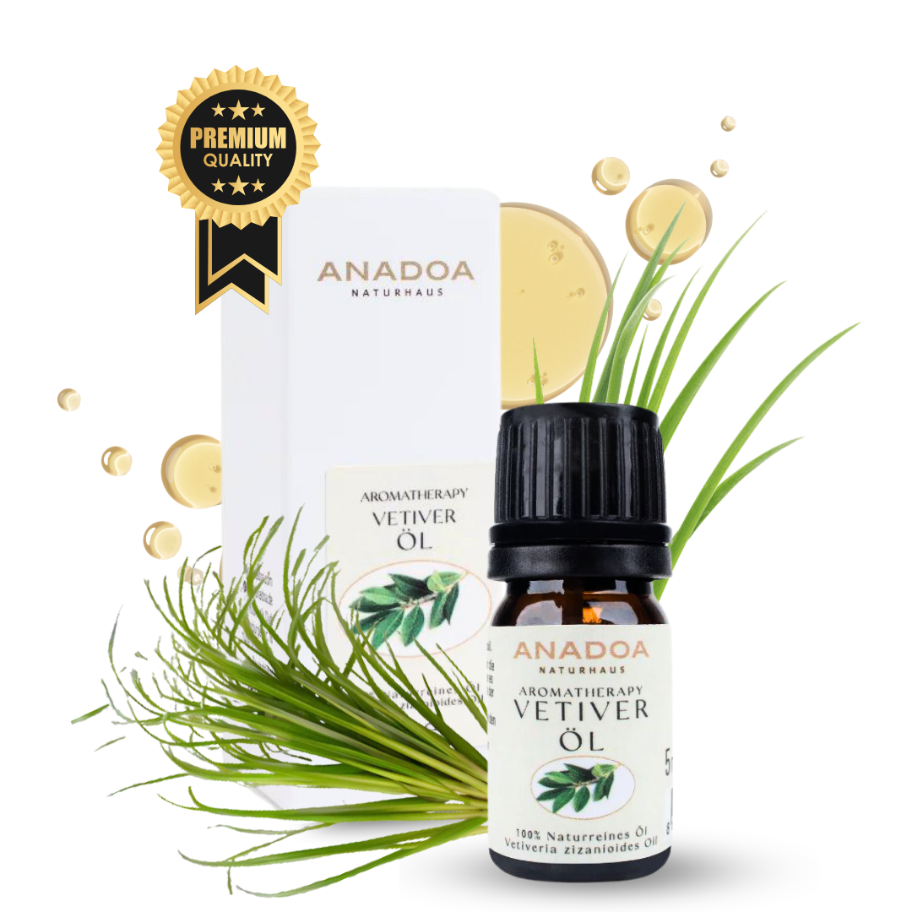

Was ist Vetiveröl?
Vetiveröl (Vetiveria zizanioides) ist die schwere, dunkle Wurzel der Aromatherapie. Es wird in Indien und Sri Lanka auch das 'Öl der Ruhe' (Oil of Tranquillity) genannt. Es ist das absolute Gegenmittel zu unserer hektischen, schnellen, digitalisierten Welt, in der der Geist ununterbrochen feuert.
Wenn Lavendel Sie nicht mehr in den Schlaf bringt, weil die Gedanken rasen, dann ist Vetiver der Anker. Der dichte, schwere, rauchig-erdige Duft zwingt den Geist förmlich dazu, in den Körper zurückzukehren, tief einzuatmen und zu entspannen.
Wo und wie wird Vetiver geerntet?
Vetiver ist eigentlich ein tropisches Süßgras, das in Asien (Indien, Java, Haiti, Réunion) wächst. Aber das Öl wird nicht aus dem Gras gewonnen! Die Pflanze bildet ein gigantisches, bis zu 3 Meter tiefes Wurzelgeflecht aus, das den Boden extrem stark vor Erosion schützt.
Um das Öl zu gewinnen, müssen diese Wurzeln mühsam ausgegraben, gereinigt, getrocknet und gehäckselt werden. Das Öl fängt die Essenz der feuchten, dunklen Tropenerde ein, in der diese Wurzeln wachsen.
Die Kunst der Destillation: Wie wird Vetiveröl hergestellt?
Die Wasserdampfdestillation der Vetiverwurzeln ist ein langwieriger Prozess, der oft über 24 Stunden dauert. Die Ausbeute ist eher gering.
Das fertige Öl ist eines der zähflüssigsten (viskösesten) ätherischen Öle überhaupt. Es hat eine tiefe Bernstein- bis braune Farbe. Wie Sandelholz und Patchouli wird Vetiveröl mit dem Alter nicht schlecht, sondern immer besser, runder und weicher.
Biochemie: Die Wirkstoffe im Vetiveröl
Das Vetiveröl ist ein biochemisches Schwergewicht, das aus hochkomplexen Sesquiterpenen besteht:
- Vetiverol (Sesquiterpenol): Der wichtigste Baustein. Es wirkt massiv erdend auf das zentrale Nervensystem, stark entspannend, entzündungshemmend und stimuliert das Immunsystem.
- Vetivon (Keton): Verleiht dem Öl den typischen erdigen, rauchigen Duft und fördert die Wundheilung und Zellerneuerung.
- Khusimol: Sorgt für die wärmende, muskelentspannende Komponente bei der Massage.
Woran erkennen Sie 100% naturreines Vetiveröl?
Vetiveröl variiert stark je nach Anbaugebiet:
- Die Viskosität (Zähigkeit): Wenn Sie die Flasche auf den Kopf drehen, müssen Sie oft Minuten warten, bis ein Tropfen fällt. Ist es dünnflüssig, wurde es mit Alkohol oder Trägeröl gestreckt.
- Bourbon vs. Java: 'Vetiver Bourbon' (aus Réunion) gilt als die edelste, blumigste und teuerste Qualität. 'Vetiver Java' aus Indonesien riecht sehr rauchig und extrem erdig. 'Haiti-Vetiver' ist oft etwas leichter und süßer.
- Die Farbe: Echtes Vetiveröl ist immer braun oder dunkel-bernsteinfarben. Nie klar.
Anwendung: Vetiveröl richtig mischen und nutzen
Vetiver ist das stärkste aller Basis-Öle:
- Der Anti-Schlaflosigkeit Anker: 1 Tropfen Vetiveröl + 2 Tropfen Lavendelöl auf einen Duftstein neben dem Bett. Oder stark verdünnt in Öl unter die Fußsohlen massieren (die Erde über die Füße aufnehmen).
- Das ADS/ADHS Beruhigungsöl: In der alternativen Praxis wird Vetiver oft stark verdünnt als Roll-On bei hyperaktiven Kindern oder Erwachsenen genutzt, um die Reizüberflutung zu dämpfen.
- Die Rheuma- & Gelenkmassage: 3 Tropfen Vetiver + 2 Tropfen Rosmarin in 20 ml Johanniskrautöl. Ein stark wärmendes Öl für steife Knie oder verspannte Schultern.
Sicherheit und häufige Anwendungsfehler bei Vetiveröl
Hinweis: Vetiver ist sehr sicher, aber beachten Sie seine Dominanz:
- Die Schwere: Vetiver ist kein Öl für morgendliche Frische. Wer es morgens benutzt, fühlt sich oft lethargisch und schwer. Es ist ein Abend-Öl.
- Dosierung: 1 Tropfen Vetiver kann den Duft von 10 Tropfen Zitrone komplett überdecken. Es reicht oft aus, mit einem Zahnstocher in die Flasche zu tippen und diesen in die Mischung zu rühren.
- Vorsicht bei starker Depression: Wenn jemand völlig antriebslos und depressiv ist, zieht Vetiver ihn noch weiter nach unten in die Schwere. Hier sind Zitrusöle besser.
Bewährte Aromatherapie-Mischungen mit Vetiveröl
Vetiver liebt spritzige oder blumige Partner, um seine Dunkelheit zu erhellen:
- Das 'Maskuline Luxus-Parfüm': 1 Tropfen Vetiver + 3 Tropfen Bergamotte + 1 Tropfen Zedernholz in Jojobaöl.
- Die 'Tropische Nacht' Diffuser-Mischung: 1 Tropfen Vetiver + 2 Tropfen Ylang-Ylang. Sinnlich, schwer und betörend.
- Das Anti-Stress Fußbad: 2 Tropfen Vetiver in warmem Wasser (mit Meersalz emulgiert). Zieht den Stress des Tages sofort aus dem Körper.
Häufig gestellte Fragen zu Vetiveröl
Warum
wird Vetiveröl als das 'Öl der Ruhe' bezeichnet?
Vetiveröl (Vetiveria zizanioides) ist das am stärksten erdende Öl der gesamten Aromatherapie. Es wird nicht aus Holz oder Blättern, sondern aus einem massiven, tiefen Wurzelgeflecht destilliert. Wenn das Nervensystem völlig überreizt ist (z.B. bei Schlaflosigkeit oder ADS/ADHS), wirkt der zähe, extrem erdige Duft wie ein schwerer Anker, der den Geist sofort zurück auf den Boden zieht.
Wie
riecht Vetiveröl?
Vetiver ist ein Duft für Kenner. Es riecht sehr dunkel, schwer, rauchig, erdig und balsamisch. Man stellt sich sofort einen feuchten Tropenwaldboden nach dem Monsunregen oder feuchte, dunkle Erde vor. In der Parfümindustrie ist es die Basisnote unzähliger teurer Herrendüfte.
Hilft
Vetiveröl bei Rheuma und Muskelschmerzen?
Ja, Vetiver wirkt stark durchblutungsfördernd und rubefazierend (wärmend). Wenn man es in einem Körperöl auf kalte, schmerzende Gelenke oder rheumatische Stellen massiert, zieht eine tiefe, entspannende Wärme in das Gewebe ein und lockert steife Muskeln.
Wofür
wird Vetiveröl in der Hautpflege verwendet?
Es regt die Zellerneuerung an und wird oft bei schlaffem Gewebe, Dehnungsstreifen oder extrem fahler, müder Haut eingesetzt. Zudem reguliert es die Talgproduktion und hilft bei öliger Akne-Haut, die Entzündungen zu kühlen.
Ist
Vetiveröl ein Aphrodisiakum?
Absolut. Wie Sandelholz und Patchouli wirkt es extrem entspannend auf den Geist. Wenn Ängste und Kopfkino verschwinden, kann sich Sinnlichkeit entfalten. Der extrem maskuline, erdige Duft ist besonders anziehend.